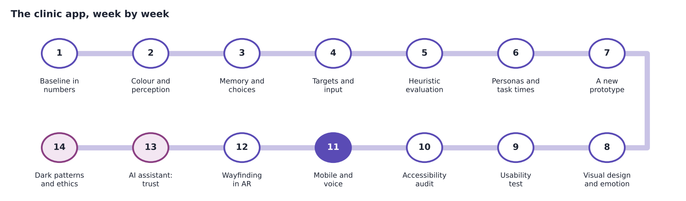
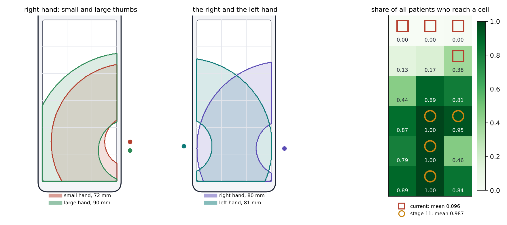
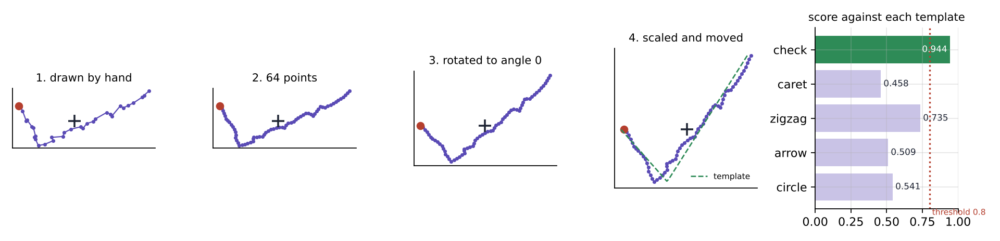
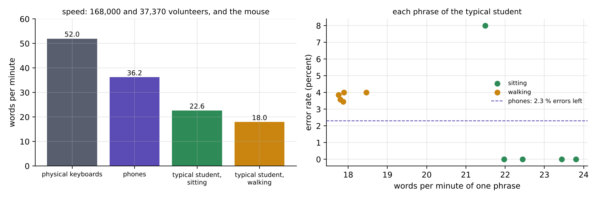
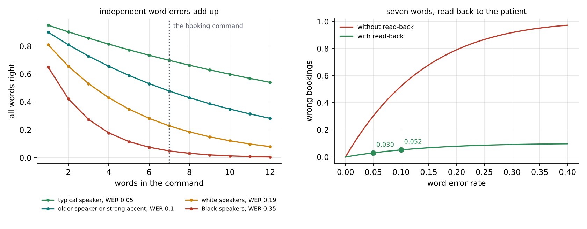
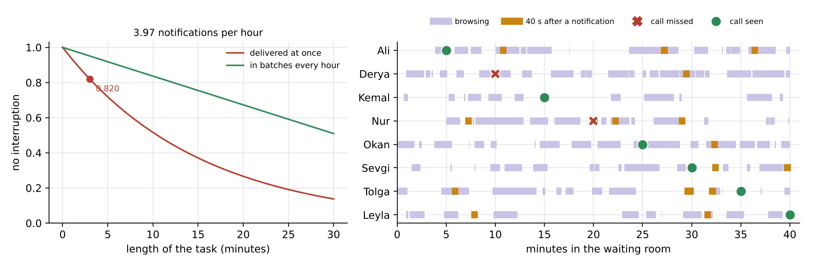
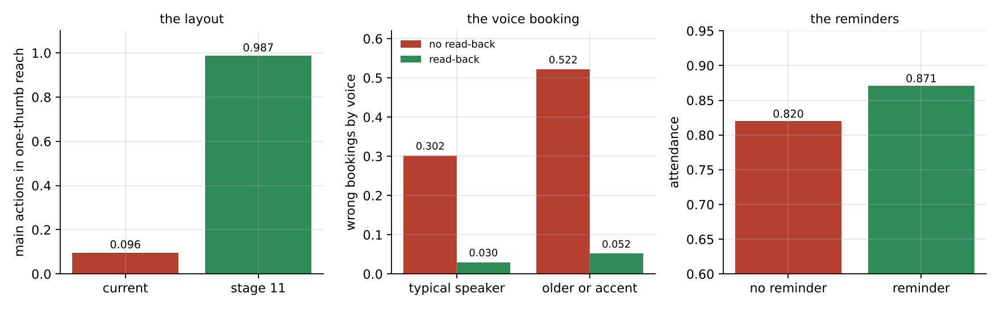

Overview
Weeks 1 to 10 designed the clinic app for its patients and audited its accessibility. Most patients, however, will meet the app on a phone held in one hand, in a corridor or in a waiting room. This week moves the app onto the phone. It measures the reach of the thumb, recognises gestures and counts the errors of typing and of speech. It also models the notifications that interrupt. The clinic app reaches stage 11, the app on the phone with voice. The Python step works with points and paths in NumPy. The week closes with voice assistants of artificial intelligence (AI) that answer medical questions.
Week at a glance
flowchart LR A["The reach of the thumb"] --> B["Gestures"] B --> C["Typing on glass"] C --> D["Speech and multimodal input"] D --> E["Notifications"] E --> F["Interface clinic"] F --> G["The human side"] G --> S["The clinic app, stage 11"] S --> H["Toward human-AI interaction"]
Every method on this page is also written as Python code in the Colab notebook of the week. Its code is divided into numbered sections. Each orange box on this page names the section whose code carries out what the text above the box explains. The box says what to run and what to look at in that section, and its button opens the Colab notebook at that place. The games, the practice parts and the self-assessment of the week are in the interactive lab. Each violet box opens one part of the interactive lab. The part ends with a link back to its box on this page, and the Colab notebook is always opened from the orange boxes here.
Python step 11: Points and paths with NumPy
Python code in the Colab notebook, right after Section 0 (setup). Open the Colab notebook and run this step cell by cell: It consists of short pieces of Python code with their explanations, a quick check and three exercises. Topics: Points as rows of an array · Distances along a path · Points at equal distances with np.interp · Turning points with a rotation.
The step stores the points of a stroke as the rows of a NumPy array [1]. It measures the length of a path, places points at equal distances along it and turns points around their centre. Section 2 builds a gesture recognizer from these pieces. Students who have never programmed start with the start-here notebook of the course.
Weeks 1 to 9 measured the booking flow, fitted it to human abilities, built a prototype and tested it with patients. Week 10 audited the app and its kiosk for accessibility and removed the barriers that the audit found.
This week moves the app onto the phone. Stage 11 places the main actions within reach of the thumb and adds voice with a read-back. It also sends reminders and the call of the waiting room to the phone.

Phones in the hand: Grips and the reach of the thumb
A phone is held while it is used, and the hand that holds it often operates it too. With one hand, only the thumb of the holding hand can touch the screen. Bergstrom-Lehtovirta and Oulasvirta called the area that this thumb can reach its functional area [2]. They derived a quadratic formula for it from the kinematics of the gripping hand. Their model predicts the area from the size of the surface and the size of the hand. It also takes the position of the index finger on the back of the device into account [2].
In a hospital, one hand is often busy. Patients carry bags, documents, a child or a crutch, and the other hand holds the phone. Ng, Brewster and Williamson studied this encumbrance while participants walked with a bag in each hand [3]. With the preferred thumb, the targeting error grew to 4.2 mm, 40 percent more than without the bags. The accuracy of targeting with the index finger fell to 48.1 percent [3].
The clinic describes the reach of a thumb with a simplified, illustrative version of the functional area. The base of the thumb lies 12 mm outside the edge of the screen, at the height \(g\) where the hand grips the phone. The thumb reaches the points whose distance from its base lies between a fraction of its length and its full length:
\((x, y)\) is a point of the screen in millimetres, measured from its left and its bottom edge. \((x_p, y_p)\) is the base of the thumb, with \(y_p = g\). On a screen 68 mm wide, \(x_p = 80\) mm for the right hand and \(x_p = -12\) mm for the left hand. \(L\) is the functional length of the thumb, and \(r = 0.32\) the share of it that the folded thumb cannot reach. Close to its own base, the thumb has to fold, so the corner next to the grip is hard to reach as well.
A worked example. The current app places its Book button in the top right cell of the screen, at (56.7, 135.7) mm. Ayşe holds the phone in her right hand with \(g = 30\) mm and \(L = 80\) mm, so the base of her thumb lies at (80, 30). Then \(d \)\({}= \sqrt{(56.7 - 80)^2 + (135.7 - 30)^2}\) \(= \sqrt{542.89 + 11172.49} \)\({}= \sqrt{11715.38} \)\({}= 108.24\) mm, far beyond 80 mm. Stage 11 places the button at (34.0, 37.0) mm, where \(d \)\({}= \sqrt{46.0^2 + 7.0^2} \)\({}= \sqrt{2116 + 49} \)\({}= 46.53\) mm. This lies between \(0.32 \times 80 = 25.6\) mm and 80 mm, so her thumb reaches it.
For all patients, the clinic assumes thumb lengths with a mean of 82 mm and a standard deviation of 7 mm, and grips between 20 and 45 mm. A quarter of the patients hold the phone in the left hand, because they are left-handed or their right hand is busy. No thumb reaches the top row of the screen in this model. The lower three cells of the middle column, however, are reached by practically every thumb, left or right. The four actions of the current app are reached by 0.096 of the patients on average, those of stage 11 by 0.987.

Check your understanding. A button lies 20 mm from the base of a thumb with \(L = 80\) mm. Is it in reach in the model of this section?
Part A of the interactive lab hands the phone to ten patients in the waiting room. Each one holds it in one hand, and the thumb tries the four main actions of the app. You first watch the current layout and then place the four buttons yourself.
Interactive lab, Part A. One hand on the phone in 3D: Ten patients with small and large hands, left and right, try the four main actions in the current layout and in your own. The results can be copied into the Colab notebook.
Python code in the Colab notebook, Section 1. Open Section 1 of the Colab notebook and run it. The functions thumb_distance and in_reach carry out the model of this section and are checked on the worked example. cell_share applies the model to 100,000 simulated patients, and a figure draws the functional areas and the share of each cell. Paste the results of Part A into MY_LAYOUT to apply your layout to all patients.
- When did you last use your phone with one hand because the other was busy?
- Many apps place their navigation in a bar at the bottom of the screen. Which cells of such a bar does the figure question?
- Should an app ask which hand holds the phone, or simply design for both?
Gestures: Recognising a stroke
A gesture turns a stroke of the finger into a command, such as a check mark that confirms a booking. Gestures need no space on a small screen and no search for a button. They are also invisible, so patients must learn them first. The Web Content Accessibility Guidelines (WCAG) 2.2 therefore ask for a simple alternative to every gesture that follows a path. This is criterion 2.5.1 [4], one of the success criteria of Week 10.
Recognising strokes used to be a task for experts in pattern matching. Wobbrock, Wilson and Li designed the $1 recognizer so that designers of prototypes could add gestures in about 100 lines of code [5]. It compares a stroke with stored templates, one or more examples of each gesture. Before the comparison, four steps remove what does not matter: The speed of the finger, the angle, the size and the position.
First, the stroke is resampled to \(N = 64\) points at equal distances along its path, whatever the speed of the finger. Second, it is turned around its centroid \((\bar{x}, \bar{y})\) until its indicative angle is zero. This is the angle of the line from the first point to the centroid. Third, the stroke is stretched to a square of 250 units, and fourth, its centroid is moved to the origin:
\(L\) is the length of the path, the sum of the distances between its points, and \(I\) the interval between the new points. \(\omega\) is the indicative angle, and the stroke is turned by \(-\omega\). Each template goes through the same four steps once, when it is stored.
A candidate \(C\) is then compared with each template \(T\) point by point. The mean distance between corresponding points decides, at the best rotation within ±45 degrees. It is turned into a score between 0 and 1:
\(C_k\) and \(T_k\) are the \(k\)-th points of the candidate and the template, and \(\lVert \cdot \rVert\) the distance between them. The denominator, 176.777, is half the diagonal of the square. The best rotation is found by a golden section search, which narrows the range of angles until it is smaller than 2 degrees [5].
→ These formulas with numbers, step by step: Lab Part B, calculator, steps 1 to 5.
A worked example. A check drawn through (20, 60), (40, 80) and (100, 20) has two segments of \(\sqrt{20^2 + 20^2} = 28.284\) and \(\sqrt{60^2 + 60^2} = 84.853\). So \(L = 113.137\) and \(I = 113.137/63 = 1.796\). Its bounding box is 80 units wide and 60 high, so scaling it without the rotation would multiply x by \(250/80 = 3.125\) and y by \(250/60 = 4.167\). If the mean distance to the best template is \(d = 23.5\) after the four steps, the score is \(1 - 23.5/176.777 = 1 - 0.133 = 0.867\).
In the study of Wobbrock and colleagues, the recognizer was right in over 97 percent of the cases with one template per gesture. With three or more templates, it was right in 99 percent [5]. These results were nearly identical to those of dynamic time warping, a more complex method, and better than those of the Rubine classifier. All three recognizers recognised gestures drawn at medium speed better than slow or fast ones.
The four steps also explain the limits of the method. Because the rotation is removed, an arrow drawn upwards counts as the same gesture as an arrow drawn to the right. Because the points are compared in the order drawn, a circle drawn the other way round matches no template. The Colab notebook finds a score of 0.672 for a backward circle, below the threshold of 0.8 below which the app reports no match.

Check your understanding. Why does the $1 recognizer resample every stroke to 64 points?
Interactive lab, Part B. The $1 recognizer step by step: The length of a stroke, the interval of the resampling, the scale factors and the score, with presets.
Part C of the interactive lab sets up a check-in tablet in the waiting room with five gestures of the clinic app. You draw each gesture twice at a comfortable speed and twice as fast as you can. The recognizer of this section scores every stroke as you draw it.
Interactive lab, Part C. Gestures on the tablet in 3D: Five gestures of the clinic app, drawn at a comfortable speed and fast, recognised and scored as you draw. The strokes can be copied into the Colab notebook.
Python code in the Colab notebook, Section 2. Open Section 2 of the Colab notebook and run it. The functions resample, indicative_angle, rotate_by, scale_to and translate_to carry out the four steps, and recognise compares a stroke with the five templates. A test with strokes drawn with noise measures the accuracy, and a figure shows the four steps. Paste your strokes of Part C into MY_STROKES to recognise them again.
- How would a patient learn that a zigzag cancels an appointment?
- Which gestures of the apps on your phone did you discover by accident?
- A recognizer that answers no match asks the user to try again. When is that better than a wrong guess?
Typing on glass: Text entry speed and errors
Typing on a touch screen gives no tactile feedback, and the keys are smaller than a fingertip. Text entry is measured by its speed and its errors, and both must be measured together, because typists can trade one for the other [6]. Speed is counted in words per minute (WPM), where a word is defined as five characters, spaces included [7]:
\(|T|\) is the length of the transcribed text in characters, and \(S\) the time in seconds from the first to the last keystroke. The first character is not counted, because the clock starts with it.
Palin, Feit, Kim, Kristensson and Oulasvirta measured mobile typing in a web test with 37,370 volunteers [8]. They typed 36.2 WPM on average and left 2.3 percent of the characters wrong. Users of autocorrection were faster, while word prediction slowed typing down. In a similar test on physical keyboards, 168,000 volunteers typed 52 WPM on average [9].
Errors are counted by comparing the presented text \(P\) with the transcribed text \(T\). The minimum string distance (MSD) is the smallest number of insertions, deletions and substitutions that turn one into the other. Soukoreff and MacKenzie divided it by the longer of the two texts to obtain an error rate [6]. The keystrokes per character (KSPC) count the keys pressed for each character of the result:
\(K\) is the number of keystrokes, corrections included. KSPC thus shows the effort of corrections, which the error rate of the final text no longer contains. Soukoreff and MacKenzie combined both views in a total error rate that counts the corrected and the uncorrected errors [6].
→ These formulas with numbers, step by step: Lab Part D, calculator, steps 1 to 4.
A worked example. A patient types please call me after five, 25 characters, in \(S = 9.6\) s. Then \((25 - 1)/9.6 = 2.5\) characters per second and \(2.5 \times 60/5 = 30.0\) WPM. Another patient types my appointmnet is on mondy for my appointment is on monday. Two substitutions swap e and n, and one deletion drops the a of monday, so \(MSD = 3\). With \(|P| = 27\), the error rate is \(3/27 = 0.111\). If the patient pressed 30 keys for the 26 characters of \(T\), then \(KSPC = 30/26 = 1.154\).
Animation. The presented text along the top, the transcribed text down the left, and the table of the minimum string distance. Step fills the table cell by cell, and each cell takes the cheapest of three moves. The path back from the last cell shows the substitutions, insertions and deletions. Switch to words to compute the word error rate of a voice command.
Mobile typing often happens on the move. Kane, Wobbrock and Smith let six participants operate a music player while walking and found that the size of the buttons interacted with the movement [10]. A second study with 29 participants tested an interface that enlarged its buttons while the user walked. It performed at the level of its static layouts, without a penalty for the adaptation.
Experiments ask all participants to type the same phrases, so that results can be compared. MacKenzie and Soukoreff published a set of 500 short phrases in lower case for this purpose [11]. The phrases of Part D follow their style, with sentences that patients send to a clinic.

Check your understanding. A text of 31 characters is typed in 12 s. What is the speed?
Part D of the interactive lab gives you the phone of a patient in the waiting room. You type five phrases sitting on a chair and five while walking down the corridor, where the phone moves in your hand.
Interactive lab, Part D. Typing in the waiting room in 3D: Five phrases sitting and five walking, with the speed, the errors and the keystrokes of each phrase. The calculator below the game repeats the formulas step by step.
Python code in the Colab notebook, Section 3. Open Section 3 of the Colab notebook and run it. The functions msd, wpm, error_rate and kspc carry out the formulas of this section and are checked on the worked examples. Paste your phrases of Part D into MY_TYPING, and the code compares sitting with walking in a table and a figure.
- Which fields of the clinic app need free text, and which could offer choices instead?
- When could autocorrection change a medical word into a wrong one?
- How would you measure the typing errors that a user corrected?
Talking to the app: Speech and multimodal input
Speech frees the hands and the eyes, and it suits patients who cannot type or cannot see the screen well. A speech recognizer turns sound into words, and its errors are counted in words. The word error rate (WER) uses the same distance as the error rate of typing, over words instead of characters [12]:
\(S\), \(D\) and \(I\) are the substituted, deleted and inserted words, and \(N\) is the number of words that were actually spoken.
Recognizers do not err equally for everyone. Koenecke and colleagues compared five commercial recognizers on interviews with Black and white speakers in the United States, matched by age and gender [12]. The average WER was 0.35 for Black speakers and 0.19 for white speakers. The gap remained for identical phrases spoken by both groups, which traced it to the acoustic models of the systems.
Short commands are easier than free conversation, but every word must be right. If each word were wrong independently with the probability \(w\), a command of \(n\) words would be recognised completely with the probability
Errors are not truly independent, so the formula is a first approximation. Reading the booking back before it is made lets the patient catch most errors. If a share \(c\) of the errors is caught, wrong bookings fall from \(1 - P\) to \((1 - P)(1 - c)\).
A worked example. The command book cardiology on wednesday at ten thirty has \(n = 7\) words. For a typical speaker with an illustrative WER of 0.05 on such commands, \(0.95^7 = 0.698\), so 0.302 of the commands contain an error. If the read-back catches \(c = 0.9\) of them, wrong bookings fall to \(0.302 \times 0.1 = 0.030\). For an older speaker or a strong accent with \(w = 0.10\), \(0.90^7 = 0.478\), and the wrong bookings fall from 0.522 to 0.052. If the recognizer hears book cardiology wednesday at two thirty, one word is deleted and one substituted, so \(WER = 2/7 = 0.286\).
Speech works best together with other modes. Bolt's Put-that-there system of 1980 let a user point at a large screen while speaking [13]. Pointing made words such as that and there possible, and speech made pointing more precise in what it referred to.
Oviatt questioned ten common beliefs about such multimodal systems [14]. Users do not always combine modes when they can. In map tasks with spatial content, 95 to 100 percent of users preferred to interact multimodally. For general actions without a spatial component, such as printing a map, they combined modes less than 1 percent of the time. The modes rarely carry the same content twice. Two error-prone recognizers can even correct each other instead of adding their errors [14].

Check your understanding. A recognizer substitutes one word and deletes another in a command of 8 words. What is the WER?
Python code in the Colab notebook, Section 4. Open Section 4 of the Colab notebook and run it. The function wer reuses msd of Section 3 for words, and p_command computes the probability of a fully recognised command. The code compares the rates of Koenecke and colleagues with illustrative rates for short commands, without and with a read-back. A figure plots both.
- Would you say your symptoms aloud to an app in a full waiting room?
- Whom might the recognizer of the clinic understand worst, and how could the clinic find out?
- When should the app read a booking back, and when would that only cost time?
Notifications, interruptions and context
In 1991, Weiser described computers that recede into the background of everyday life, embedded in the objects and rooms around people [15]. Today's phone is part of this ubiquitous computing: It travels with its owner and knows the time, the place and the activity. Dey defined context as any information that characterises the situation of a person, place or object that matters to the interaction [16]. A context-aware app uses it to decide what to show, and when.
The phone uses this knowledge most visibly in notifications. Pielot, Church and de Oliveira logged the notifications of 15 phone users for a week [17]. The users received 63.5 notifications a day on average, mostly from messengers and email. They usually viewed them within minutes, whether the phone was silent or not.
Spread over 16 waking hours, 63.5 notifications a day are \(\lambda = 63.5/16 = 3.97\) per hour. If they arrive independently at random moments, as a Poisson process, a task of \(T\) hours stays free of them with the probability \(P_0\):
\(P_B\) is the probability that a delivery in batches every \(B\) hours interrupts the task, for \(T < B\). The task is hit only if a delivery falls inside it, with the probability \(T/B\), and if the batch is not empty.
A worked example. A booking of three minutes lasts \(T = 0.05\) h, so \(\lambda T = 3.97 \times 0.05 = 0.199\) and \(P_0 = e^{-0.199} = 0.820\). Nearly one booking in five is interrupted. With batches every hour, \(e^{-3.97} = 0.0189\) and \(P_B = 0.05 \times 0.981 = 0.0491\).
Fitz and colleagues tested batching in a randomised field experiment with 237 participants [18]. Those who received their notifications three times a day felt more attentive, more productive, in a better mood and in greater control of their phones. Batching every hour brought little change, and those who received no notifications at all felt more anxious.
The waiting room of the clinic shows why context matters. Patients wait for their number on a display and look at their phones in the meantime. A call that comes while a patient looks down is missed, and the next patients wait longer. The clinic app knows when a patient waits in the room and is next in line, so it can send the call to the phone itself.
Scene: Called while looking down. Eight patients wait for their numbers in the waiting room and look at their phones in the meantime. Play the 40 minutes: A phone lights up when a notification arrives, and a patient who looks down when called misses the call. Switch on the two features of stage 11 one by one and play again. The readout counts the missed calls and the notifications before the calls.
In the scene, two of the eight calls are missed when the call appears only on the display. One miss follows a notification of another app, and holding such notifications until the call removes it. The other miss comes from browsing, and only the call on the phone removes both.

Check your understanding. Notifications arrive at 6 per hour. What is the probability that a task of 5 minutes is not interrupted?
Python code in the Colab notebook, Section 5. Open Section 5 of the Colab notebook and run it. The functions p_quiet and p_batched carry out the formulas of this section, and a simulation of 100,000 bookings confirms the first one. The function waiting_room rebuilds the waiting room of the 3D scene with the same seed. The code counts the missed calls for each setting, and a figure draws both.
- Which notifications of the clinic should never wait in a batch?
- The app knows that a patient is in the hospital. What else could it infer from that, and what should it not?
- Should the clinic call patients on their phones if that makes them look down even more?
Interface clinic: The app on the phone, before and after
The four pairs below show screens of the clinic app on the phone before and after a redesign. Each pair names the problem and the measure of this week behind it.
Interface clinic: Actions within the thumb's reach. The home screen of the clinic app, held in one hand.
BeforeActions in the top bar
No thumb reaches the top row with one hand. The four actions are reached by 0.096 of the patients on average, so most patients shift the phone or use both hands.
AfterLarge buttons in the lower middle
The lower cells of the middle column are reached by practically every thumb, left or right. The mean share rises to 0.987.
Interface clinic: The reason for the visit. The second screen of the booking.
BeforeA free text field
Typing 60 characters at 36.2 WPM takes 19.6 s and leaves 1.38 wrong characters on average, more for patients who walk or carry something.
AfterChoices, with voice and typing as options
Two taps choose the common reasons. Voice and typing remain for the rest.
Interface clinic: A booking by voice. The patient said: Book cardiology on Wednesday at ten thirty.
BeforeBooked at once
One wrong word books the wrong time. With a WER of 0.05, 0.302 of seven-word commands contain an error.
AfterRead back first
The patient hears the booking before it is made. If 0.9 of the errors are caught, wrong bookings fall to 0.030.
Interface clinic: The reminder on the lock screen. A reminder one day before the appointment, on a locked phone.
BeforeEvery detail on the lock screen
Anyone who glances at the phone reads the department and the reason. Notifications are seen within minutes, wherever the phone lies.
AfterDiscreet on the lock screen
The reminder still arrives in time, and the details stay behind the lock.
- Which of the four problems would a patient notice first, and which would only show in the numbers?
- The discreet reminder hides the department. When could that be a problem for the patient?
The human side: Attention on the phone
A phone does not have to be used to cost attention. Stothart, Mitchum and Yehnert gave 166 students a task in which they pressed a key for every digit except 3 [19]. During the task, some of them received a call or a text message on their own phones without being told that it would come. The notifications alone disrupted their performance, although the students did not touch their phones. The effect was comparable to that of actually using a phone [19].
A waiting room is a place of divided attention. Patients follow the display, keep an eye on their belongings and children, and use their phones to pass the time. Week 3 showed that interruptions cost time and stress at work. In the waiting room, they can cost a patient the turn.
A patient reads the news on her phone while she waits at the laboratory. The number on the display changes twice before she looks up. A nurse finally calls her name aloud, and she hurries in, apologising. A message on her phone, You are next, please come to room 3, would have reached her where her attention already was.
- Should a hospital ask patients to put their phones away in the waiting room?
- How could the display and the phone work together so that neither interrupts more than needed?
The clinic app, stage 11: The app on the phone, with voice
Stage 11 moves the booking of the clinic app onto the phone and adds voice. It applies the measures of this week to the main actions, the reason for the visit, the voice booking, the calls in the waiting room and the reminders.
The four main actions move from the top bar to large buttons in the lower middle of the screen. In the model of this week, their mean reach rises from 0.096 to 0.987 of the patients. The reason for the visit becomes a choice of common reasons. Two taps replace 19.6 s of typing that would leave 1.38 wrong characters on average.
Booking by voice reads the booking back before it is made. With the illustrative word error rates of 0.05 and 0.10 for short commands, wrong bookings fall from 0.302 to 0.030 and from 0.522 to 0.052. The app also sends the call to the phone when the number of the patient comes up. In the scene, this removed both missed calls of the waiting room.
Reminders follow the review of Guy and colleagues, which found 18 reports on reminders sent by short message service (SMS) [20]. In its eight randomised trials, the reminders raised the odds of attending by a factor of 1.48, with a 95 percent confidence interval from 1.23 to 1.72. The timing of the message, 24, 48 or 72 and more hours before, made no significant difference. An odds ratio (OR) multiplies the odds of attending, not the share:
\(p_0\) is the share who attend without a reminder, and \(o_0\) are its odds. \(o_1\) and \(p_1\) are the odds and the share with reminders.
A worked example. If 0.82 of the patients attend without reminders, \(o_0 = 0.82/0.18 = 4.556\) and \(o_1 = 1.48 \times 4.556 = 6.743\). Then \(p_1 = 6.743/7.743 = 0.871\): Of 1,000 appointments, 51 more are attended. The confidence interval of the odds ratio gives a range from 0.849 to 0.887.
| Measure | Before | Stage 11 |
|---|---|---|
| Main actions in one-thumb reach (mean share of patients) | 0.096 | 0.987 |
| Reason for the visit | typed: 19.6 s, 1.38 wrong characters | chosen: 2 taps |
| Wrong bookings by voice, typical speaker | 0.302 without read-back | 0.030 |
| Wrong bookings by voice, older speaker or strong accent | 0.522 without read-back | 0.052 |
| Missed calls in the waiting room of the scene | 2 of 8 | 0 of 8 |
| Attendance | 0.820 | 0.871 |

| Question of stage 11 | Answer | Where |
|---|---|---|
| Can every thumb reach the main actions? | 0.987 on average, with Directions lowest at 0.948 | Section 1, Part A |
| Which gestures does the app recognise? | Five, as shortcuts next to buttons, with a threshold of 0.8 | Section 2, Parts B and C |
| How long does the reason for the visit take? | Two taps instead of 19.6 s of typing | Section 3, Part D |
| How safe is booking by voice? | 0.030 wrong bookings with a read-back for typical speakers | Section 4 |
| Who misses the call in the waiting room? | Nobody, when the call also goes to the phone | Section 5, the scene |
| Do reminders help? | Attendance rises from 0.82 to 0.871 | Section 6, Part E |
Stage 11 rests on models with illustrative values, such as the thumb lengths and the word error rates of short commands. A test with patients and their own phones, as in Week 9, would check them. Week 12 leaves the flat screen and guides patients through the hospital in three dimensions.
Check your understanding. An odds ratio of 1.48 is applied to an attendance of 0.82. What is the attendance with reminders?
Interactive lab, Part E. Stage 11 by hand: The attendance with reminders, from the odds and the odds ratio.
Python code in the Colab notebook, Section 6. Open Section 6 of the Colab notebook and run it. The code collects the results of stage 11 in the dictionary STAGE11. It holds the reach of the two layouts, the time of the reason field, the voice booking with a read-back and the calls in the waiting room. It adds the attendance with reminders, also for both ends of the confidence interval, and a figure draws the results.
Your application
The questions of this week apply to every mobile app: Can the thumb reach the main action, how much must be typed and how often does the app interrupt? The Colab notebook holds an application switch with four further apps: Online banking, an e-government service, food delivery and course registration at a university.
Python code in the Colab notebook, Section 7. Open Section 7 of the Colab notebook, set APP to one of the five names in the comment and run the cell. The code computes the share of users who reach the main action of the app with one thumb and the time of typing its text field. It also estimates how often its notifications interrupt a task of three minutes.
Toward human-AI interaction
Voice assistants answer questions in the same way as they book: They hear words and act on them. Bickmore and colleagues asked 54 participants to pose medical problems to Siri, Alexa and Google Assistant in their own words and to decide what to do [21]. The participants completed only 168 of their 394 tasks, 43 percent. In 49 of the completed tasks, 29 percent, the actions they reported could have caused some harm, and 27 of them, 16 percent, could have caused death.
A spoken answer leaves no text to read again and no source to check, so a misunderstanding can pass unnoticed. The authors concluded that patients should not act on medical answers of such assistants without consulting a health professional [21].
Suppose that the clinic adds an assistant that understands free speech, such as I need to see someone about my knee next week. It must turn the request into a department, a day and a time, and each step can go wrong. Reading the booking back, as in stage 11, lets the patient correct it before it counts. Week 13 returns to the question of how much users should trust such a system.
- Which medical questions would you never ask a voice assistant, and why?
- How should an assistant say that it is unsure of what it heard?
Review cards
Select a card to turn it over.
References
[1] Harris, C. R., Millman, K. J., van der Walt, S. J., Gommers, R., Virtanen, P., Cournapeau, D., Wieser, E., Taylor, J., Berg, S., Smith, N. J., Kern, R., Picus, M., Hoyer, S., van Kerkwijk, M. H., Brett, M., Haldane, A., Fernández del Río, J., Wiebe, M., Peterson, P., Gérard-Marchant, P., Sheppard, K., Reddy, T., Weckesser, W., Abbasi, H., Gohlke, C., & Oliphant, T. E. (2020). Array programming with NumPy. Nature, 585(7825), 357-362. https://doi.org/10.1038/s41586-020-2649-2
[2] Bergstrom-Lehtovirta, J., & Oulasvirta, A. (2014). Modeling the functional area of the thumb on mobile touchscreen surfaces. In Proceedings of the SIGCHI Conference on Human Factors in Computing Systems (pp. 1991-2000). ACM. https://doi.org/10.1145/2556288.2557354
[3] Ng, A., Brewster, S. A., & Williamson, J. H. (2014). Investigating the effects of encumbrance on one- and two-handed interactions with mobile devices. In Proceedings of the SIGCHI Conference on Human Factors in Computing Systems (pp. 1981-1990). ACM. https://doi.org/10.1145/2556288.2557312
[4] Campbell, A., Adams, C., Bradley Montgomery, R., Cooper, M., & Kirkpatrick, A. (Eds.). (2023). Web Content Accessibility Guidelines (WCAG) 2.2 (W3C Recommendation). World Wide Web Consortium. https://www.w3.org/TR/WCAG22/
[5] Wobbrock, J. O., Wilson, A. D., & Li, Y. (2007). Gestures without libraries, toolkits or training: A $1 recognizer for user interface prototypes. In Proceedings of the 20th Annual ACM Symposium on User Interface Software and Technology (pp. 159-168). ACM. https://doi.org/10.1145/1294211.1294238
[6] Soukoreff, R. W., & MacKenzie, I. S. (2003). Metrics for text entry research: An evaluation of MSD and KSPC, and a new unified error metric. In Proceedings of the SIGCHI Conference on Human Factors in Computing Systems (pp. 113-120). ACM. https://doi.org/10.1145/642611.642632
[7] MacKenzie, I. S. (2024). Human-Computer Interaction: An Empirical Research Perspective (2nd ed.). Morgan Kaufmann. https://www.oreilly.com/library/view/-/9780443140976/
[8] Palin, K., Feit, A. M., Kim, S., Kristensson, P. O., & Oulasvirta, A. (2019). How do people type on mobile devices? Observations from a study with 37,000 volunteers. In Proceedings of the 21st International Conference on Human-Computer Interaction with Mobile Devices and Services (pp. 1-12). ACM. https://doi.org/10.1145/3338286.3340120
[9] Dhakal, V., Feit, A. M., Kristensson, P. O., & Oulasvirta, A. (2018). Observations on typing from 136 million keystrokes. In Proceedings of the 2018 CHI Conference on Human Factors in Computing Systems (pp. 1-12). ACM. https://doi.org/10.1145/3173574.3174220
[10] Kane, S. K., Wobbrock, J. O., & Smith, I. E. (2008). Getting off the treadmill: Evaluating walking user interfaces for mobile devices in public spaces. In Proceedings of the 10th International Conference on Human Computer Interaction with Mobile Devices and Services (pp. 109-118). ACM. https://doi.org/10.1145/1409240.1409253
[11] MacKenzie, I. S., & Soukoreff, R. W. (2003). Phrase sets for evaluating text entry techniques. In CHI '03 Extended Abstracts on Human Factors in Computing Systems (pp. 754-755). ACM. https://doi.org/10.1145/765891.765971
[12] Koenecke, A., Nam, A., Lake, E., Nudell, J., Quartey, M., Mengesha, Z., Toups, C., Rickford, J. R., Jurafsky, D., & Goel, S. (2020). Racial disparities in automated speech recognition. Proceedings of the National Academy of Sciences, 117(14), 7684-7689. https://doi.org/10.1073/pnas.1915768117
[13] Bolt, R. A. (1980). "Put-that-there": Voice and gesture at the graphics interface. In Proceedings of the 7th Annual Conference on Computer Graphics and Interactive Techniques (pp. 262-270). ACM. https://doi.org/10.1145/800250.807503
[14] Oviatt, S. (1999). Ten myths of multimodal interaction. Communications of the ACM, 42(11), 74-81. https://doi.org/10.1145/319382.319398
[15] Weiser, M. (1991). The computer for the 21st century. Scientific American, 265(3), 94-104. https://doi.org/10.1038/scientificamerican0991-94
[16] Dey, A. K. (2001). Understanding and using context. Personal and Ubiquitous Computing, 5(1), 4-7. https://doi.org/10.1007/s007790170019
[17] Pielot, M., Church, K., & de Oliveira, R. (2014). An in-situ study of mobile phone notifications. In Proceedings of the 16th International Conference on Human-Computer Interaction with Mobile Devices and Services (pp. 233-242). ACM. https://doi.org/10.1145/2628363.2628364
[18] Fitz, N., Kushlev, K., Jagannathan, R., Lewis, T., Paliwal, D., & Ariely, D. (2019). Batching smartphone notifications can improve well-being. Computers in Human Behavior, 101, 84-94. https://doi.org/10.1016/j.chb.2019.07.016
[19] Stothart, C., Mitchum, A., & Yehnert, C. (2015). The attentional cost of receiving a cell phone notification. Journal of Experimental Psychology: Human Perception and Performance, 41(4), 893-897. https://doi.org/10.1037/xhp0000100
[20] Guy, R., Hocking, J., Wand, H., Stott, S., Ali, H., & Kaldor, J. (2012). How effective are short message service reminders at increasing clinic attendance? A meta-analysis and systematic review. Health Services Research, 47(2), 614-632. https://doi.org/10.1111/j.1475-6773.2011.01342.x
[21] Bickmore, T. W., Trinh, H., Olafsson, S., O'Leary, T. K., Asadi, R., Rickles, N. M., & Cruz, R. (2018). Patient and consumer safety risks when using conversational assistants for medical information: An observational study of Siri, Alexa, and Google Assistant. Journal of Medical Internet Research, 20(9), e11510. https://doi.org/10.2196/11510